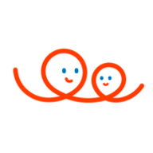
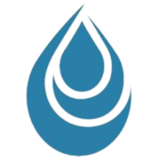

Marketing digital · Parcours client · Conduite du changement
Je transforme les parcours clients à l'ère du digital.
Chargée de Web Marketing formée à la digitalisation des parcours clients (EM Strasbourg), je relie l'acquisition, la donnée et la conduite du changement — au croisement du marketing et de l'IT.
À propos
Comprendre un parcours, avant de le transformer
Tout est parti d'une question que je me pose encore à chaque projet : pourquoi ce client abandonne-t-il ici, précisément ? Cette curiosité m'a menée du terrain chez American Cola à Douala jusqu'aux amphithéâtres de l'EM Strasbourg, où j'ai enchaîné un Master 1 Marketing & Relation Clients puis un Master 2 Digitalisation des Parcours Clients — deux années à disséquer, chiffre après chiffre, ce qui fait qu'un parcours convertit ou échoue.
Chez Lemonway, cette conviction est devenue un métier : piloter un funnel B2B de bout en bout, de la campagne à la conversion, avec la donnée comme boussole. Aujourd'hui, je cherche un premier poste qui prolonge cette trajectoire, à la croisée du marketing et de l'IT.
Et parce que ce métier change vite, j'apprends aussi vite : je m'immerge dans l'IA générative et les agents pour rester à la pointe et démultiplier mon impact dès mes premières missions.
Expertise
Trois piliers, une seule conviction
Marketing digital & acquisition
Google Ads, LinkedIn Ads, SEO/SEA, CRM (Salesforce, Pardot, HubSpot) — piloter un funnel de bout en bout, de la campagne au lead qualifié.
Digitalisation du parcours client
Cartographier un parcours, identifier les frictions, et le repenser avec un double regard marketing et expérience utilisateur.
Conduite du changement
Faire adopter un outil ou un process par des équipes non-tech — anticiper les résistances plutôt que les subir.
Expérience professionnelle
- Animé la stratégie de contenu B2B bilingue FR/EN — 10 articles de blog, 10+ posts LinkedIn et 20+ contenus web ciblant les prospects
- Piloté 6 campagnes digitales B2B (Google Ads, LinkedIn Ads, emailing) — 90 leads qualifiés (MQL) générés par mois en moyenne
- Automatisé 4 scénarios de nurturing sous Pardot — gain de 40% sur le traitement manuel, conformité RGPD
- Qualifié 8 000 contacts dans Salesforce CRM — réduction de 30% des leads non exploitables sur 3 mois
- Augmenté le taux d'ouverture emailing de 20% via A/B testing et lead scoring comportemental
- Construit 2 dashboards de suivi acquisition (trafic, conversion, ROI) et coordonné des webinars externes
- Créé la newsletter prospects pour les marketplaces B2B/B2C et la plateforme de crowdfunding
Expérience professionnelle

CFPE France Parrainages · Paris- Géré 8 campagnes emailing semestrielles (segmentation CRM, copywriting) — délivrabilité maintenue à 97%
- Optimisé 5 parcours d'acquisition (SEO on-page, CTA, arborescence) via GA4 — taux de rebond réduit de 18%
- Réalisé une analyse concurrentielle de 5 acteurs — 7 recommandations intégrées au plan marketing Q1 2024
Expérience professionnelle

American Cola (Source du Pays) · Douala, Cameroun- Réalisé une étude de marché sur 120 consommateurs et une veille de 6 concurrents — cahier des charges livré pour le lancement produit
- Analysé les données de performance post-lancement (ventes, parts de marché, retours terrain) — rapport mensuel formalisé
Études de cas
Des projets, pas des promesses
Parcours de souscription — BNP Paribas
Le tunnel de souscription en ligne perdait des clients à chaque étape. J'ai disséqué le parcours, isolé les frictions critiques et livré un plan d'action concret — jusqu'à la conduite du changement pour le faire adopter en interne.
Audit SEO complet — Mustela
56 pages d'audit sur mustela.fr : j'ai passé le site Shopify au crible — technique, sémantique, netlinking, EEAT — et livré des recommandations concrètes pour regagner en visibilité sur Google. Un audit du même type a aussi été mené pour Club Med.
Dashboard de pilotage — Power BI
Le funnel de souscription enfin lisible en un coup d'œil : conversion par canal, point de friction critique identifié, pilotage data en temps réel.
Voir le dashboardAdoption d'un assistant IA — Lemonway
Comment faire adopter l'IA à des équipes qui s'en méfient ? Un plan concret : résistances anticipées, formation terrain, garde-fous réglementaires.
Pilotage d'une campagne bancaire — Kaggle
Un dataset bancaire brut, du bruit partout : je nettoie, je feature-engineer, direction un dashboard de ciblage prêt à guider la prochaine campagne.
Compétences
La boîte à outils
Acquisition & paid
CRM & automation
Data & reporting
Content & SEO
Outils & productivité
IA & agents
En apprentissageLangues
Qualités humaines
Contact
Discutons de mon prochain poste
Ce portfolio montre ce que j'ai fait ; j'aimerais surtout vous montrer, en échangeant, ce que je peux apporter à votre équipe.
Disponible pour un premier emploi à partir de 2026 en marketing digital (profil pont marketing × IT), mobile sur Paris / Île-de-France et dans toute la France. Actuellement en veille active sur l'IA générative et les agents pour renforcer mon impact.
Daryne Voufo — Marketing digital & transformation des parcours clients · 2026